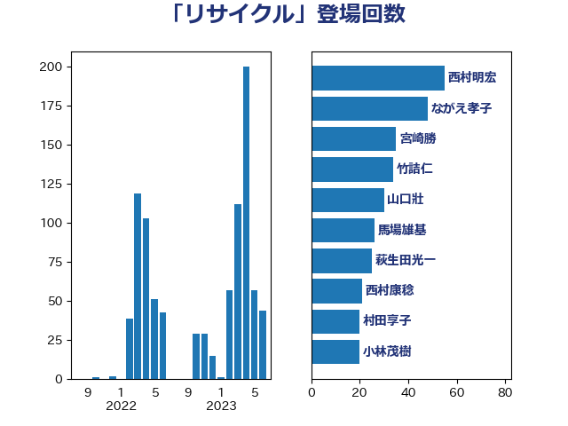

単語「リサイクル」

| 西村明宏 | 自由民主党 | 55 回 |
| ながえ孝子 | 無所属 | 48 回 |
| 宮崎勝 | 公明党 | 35 回 |
| 竹詰仁 | 国民民主党 | 34 回 |
| 山口壯 | 自由民主党 | 30 回 |
| 馬場雄基 | 立憲民主党 | 26 回 |
| 萩生田光一 | 自由民主党 | 25 回 |
| 西村康稔 | 自由民主党 | 21 回 |
| 村田享子 | 立憲民主党 | 20 回 |
| 小林茂樹 | 自由民主党 | 20 回 |
| 鈴木義弘 | 国民民主党 | 19 回 |
| 平山佐知子 | 無所属 | 18 回 |
| 西野太亮 | 自由民主党 | 15 回 |
| 田中健 | 国民民主党 | 13 回 |
| 務台俊介 | 自由民主党 | 13 回 |
| 寺田静 | 無所属 | 12 回 |
| 朝日健太郎 | 自由民主党 | 10 回 |
| 清水貴之 | 日本維新の会 | 9 回 |
| 日下正喜 | 公明党 | 9 回 |
| 小野泰輔 | 日本維新の会 | 9 回 |
| 穂坂泰 | 自由民主党 | 8 回 |
| 浅野哲 | 国民民主党 | 7 回 |
| 新妻秀規 | 公明党 | 7 回 |
| 三浦信祐 | 公明党 | 7 回 |
| 木村英子 | れいわ新選組 | 6 回 |
| 伊藤孝江 | 公明党 | 6 回 |
| 若松謙維 | 公明党 | 5 回 |
| 松本剛明 | 自由民主党 | 5 回 |
| 岸真紀子 | 立憲民主党 | 5 回 |
| 宮口治子 | 立憲民主党 | 5 回 |
| 青木愛 | 立憲民主党 | 4 回 |
| 松原仁 | 立憲民主党 | 4 回 |
| 岸田文雄 | 自由民主党 | 4 回 |
| 奥下剛光 | 日本維新の会 | 4 回 |
| 野田国義 | 立憲民主党 | 3 回 |
| 遠藤良太 | 日本維新の会 | 3 回 |
| 進藤金日子 | 自由民主党 | 3 回 |
| 細田健一 | 自由民主党 | 3 回 |
| 礒崎哲史 | 国民民主党 | 3 回 |
| 梅村聡 | 日本維新の会 | 3 回 |
| 斉藤鉄夫 | 公明党 | 3 回 |
| 佐々木さやか | 公明党 | 3 回 |
| 仁木博文 | 無所属 | 3 回 |
| たがや亮 | れいわ新選組 | 3 回 |
| 高市早苗 | 自由民主党 | 2 回 |
| 鎌田さゆり | 立憲民主党 | 2 回 |
| 野村哲郎 | 自由民主党 | 2 回 |
| 若宮健嗣 | 自由民主党 | 2 回 |
| 篠原孝 | 立憲民主党 | 2 回 |
| 石井拓 | 自由民主党 | 2 回 |
| 田嶋要 | 立憲民主党 | 2 回 |
| 片山さつき | 自由民主党 | 2 回 |
| 漆間譲司 | 日本維新の会 | 2 回 |
| 源馬謙太郎 | 立憲民主党 | 2 回 |
| 櫻井周 | 立憲民主党 | 2 回 |
| 森田俊和 | 立憲民主党 | 2 回 |
| 松野明美 | 日本維新の会 | 2 回 |
| 川合孝典 | 国民民主党 | 2 回 |
| 山本太郎 | れいわ新選組 | 2 回 |
| 山口晋 | 自由民主党 | 2 回 |
| 大岡敏孝 | 自由民主党 | 2 回 |
| 北神圭朗 | 無所属 | 2 回 |
| 中川宏昌 | 公明党 | 2 回 |
| 長峯誠 | 自由民主党 | 1 回 |
| 長友慎治 | 国民民主党 | 1 回 |
| 鈴木敦 | 国民民主党 | 1 回 |
| 金子恵美 | 立憲民主党 | 1 回 |
| 輿水恵一 | 公明党 | 1 回 |
| 足立敏之 | 自由民主党 | 1 回 |
| 西田実仁 | 公明党 | 1 回 |
| 藤巻健太 | 日本維新の会 | 1 回 |
| 葉梨康弘 | 自由民主党 | 1 回 |
| 舩後靖彦 | れいわ新選組 | 1 回 |
| 竹内真二 | 公明党 | 1 回 |
| 空本誠喜 | 日本維新の会 | 1 回 |
| 福島伸享 | 無所属 | 1 回 |
| 石川博崇 | 公明党 | 1 回 |
| 石原宏高 | 自由民主党 | 1 回 |
| 田村貴昭 | 日本共産党 | 1 回 |
| 田島麻衣子 | 立憲民主党 | 1 回 |
| 河西宏一 | 公明党 | 1 回 |
| 柳本顕 | 自由民主党 | 1 回 |
| 林芳正 | 自由民主党 | 1 回 |
| 山田美樹 | 自由民主党 | 1 回 |
| 山岡達丸 | 立憲民主党 | 1 回 |
| 小野田紀美 | 自由民主党 | 1 回 |
| 小林鷹之 | 自由民主党 | 1 回 |
| 宮沢洋一 | 自由民主党 | 1 回 |
| 宮崎雅夫 | 自由民主党 | 1 回 |
| 室井邦彦 | 日本維新の会 | 1 回 |
| 宗清皇一 | 自由民主党 | 1 回 |
| 安江伸夫 | 公明党 | 1 回 |
| 堤かなめ | 立憲民主党 | 1 回 |
| 加藤鮎子 | 自由民主党 | 1 回 |
| 加藤勝信 | 自由民主党 | 1 回 |
| 伊藤岳 | 日本共産党 | 1 回 |
| 井坂信彦 | 立憲民主党 | 1 回 |
| 中野洋昌 | 公明党 | 1 回 |
| 下野六太 | 公明党 | 1 回 |
| 上田勇 | 公明党 | 1 回 |
| 三宅伸吾 | 自由民主党 | 1 回 |